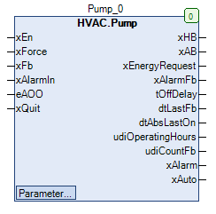
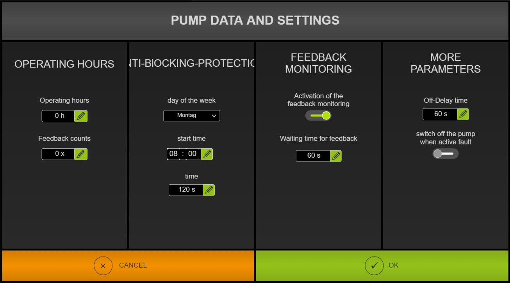

Pump (FB)¶
FUNCTION_BLOCK Pump
Kurzbeschreibung¶
Steuerung einer Umwälzpumpe mit Blockierschutzfunktion
Darstellung¶

Schnittstellen¶
Eingänge¶
Name Datentyp Wertebereich Initialwert Funktion xEn BOOL Anforderung der Umwälzpumpe xForce BOOL FALSE Zwangsübersteuerung nach Handübersteuerung xFb BOOL Betriebsmeldung der Umwälzpumpe xAlarmIn BOOL Störmeldung der Umwälzpumpe eAOO HVACTYPES.eManBin HVACTYPES.eManBin.Auto, HVACTYPES.eManBin.ManOff, HVACTYPES.eManBin.ManOn HVACTYPES.eManBin.Auto Betriebsart der Handübersteuerung - Hardware xQuit BOOL FALSE Rücksetzung der Störmeldung der Betriebsüberwachung
Ausgänge¶
Name Datentyp Wertebereich Initialwert Funktion xHB BOOL
FALSE: Hand-Ausgang: Umwälzpumpe nicht freigegeben TRUE: Hand-Ausgang: Umwälzpumpe freigegeben xAB BOOL
FALSE: Automatik-Ausgang: Umwälzpumpe nicht freigegeben TRUE: Automatik-Ausgang: Umwälzpumpe freigegeben xEnergyRequest BOOL
FALSE: Anforderung-Energieerzeugung nicht freigegeben TRUE: Anforderung-Energieerzeugung freigegeben xAlarmFb BOOL
FALSE: Störmeldung-Betriebsüberwachung nicht freigegeben TRUE: Störmeldung-Betriebsüberwachung freigegeben tOffDelay TIME Restzeit des Nachlaufs der Umwälzpumpe dtLastFb DATE_AND_TIME Datum / Uhrzeit des letzten Betriebs der Umwälzpumpe dtAbsLastOn DATE_AND_TIME Datum / Uhrzeit des letzten Blockierschutzbetriebs udiOperatingHours UDINT Betriebsstunden der Umwälzpumpe udiCountFb UDINT Anzahl der Einschaltungen der Umwälzpumpe xAlarm BOOL
FALSE: Sammelstörmeldung nicht freigegeben TRUE: Sammelstörmeldung freigegeben xAuto BOOL
FALSE: Sammelmeldung Automatikbetrieb nicht freigegeben TRUE: Sammelmeldung Automatikbetrieb freigegeben
Sollwerte / Parameter¶
Name Datentyp Wertebereich Initialwert Funktion xAlarmControl BOOL FALSE
FALSE: xHb von xAlarm unabhängig TRUE: xHb wird bei xAlarm = TRUE gesperrt udiFbControlTime UDINT 0 ... 300s 60s Zeitdauer der Betriebsüberwachung xFbControl BOOL TRUE
FALSE: Betriebsüberwachung nicht freigegeben TRUE: Betriebsüberwachung freigegeben xForceOption BOOL TRUE
FALSE: Ausgang xHB bei Zwangsübersteuerung AUS TRUE: Ausgang xHB bei Zwangsübersteuerung EIN tAbsTime UDINT 0 ... 600s 120s Zeitdauer des Blockierschutzbetriebs tAbsTime TOD 00:00:00 - 23:59:59 Uhr 08:00:00 Uhr Zeitpunkt des Blockierschutzbetriebs eAbsDay eDoW eDoW.Monday ... eDoW.Sunday eDoW.Monday Wochentag des Blockierschutzbetriebs eOffDelayTimeBase eTime eTime.Second, eTime.Minute, eTime.Hour eTime.Second Skalierung der Nachlaufzeit ( Sekunden / Minuten / Stunden ) udiOffDelay UDINT 0 ... 60min 120s Nachlaufzeitdauer der Umwälzpumpe eManModeB eMANBIN eMANBIN.Auto, eMANBIN.ManOff, eMANBIN.ManOn eMANBIN.Auto Betriebsart der Handübersteuerung für den digitalen Ausgang xHB
Funktionsbeschreibung¶
Automatik-Ausgang xAB¶
Der digitale Automatik-Ausgang xAB wird durch den Eingang xEn, den Ausgang xAlarm, das Nachlaufmodul und das Blockierschutzmodul beeinflusst.
xEn xAlarm xAlarmControl Nachlaufmodul Blockierschutzmodul xAB Hinweise X TRUE TRUE X X FALSE Abschaltung über Sammelstörung freigegeben FALSE X FALSE FALSE FALSE FALSE Automatikbetrieb Aus TRUE x FALSE FALSE FALSE TRUE Automatikbetrieb Ein X X FALSE TRUE X TRUE Nachlaufbetrieb X x FALSE X TRUE TRUE Blockierschutzbetrieb
Legende: X = beliebig
Mit dem Parameter xAlarmControl kann das Verhalten des Ausgangs xAB im Fehlerfall beeinflusst werden.
Bei xAlarmControl = TRUE wird im Fehlerfall (xAlarm = TRUE) der Automatik-Ausgang xAB abgeschaltet,
befindet sich das Handübersteuermodul in Automatik, dann wird auch der Ausgang xHB abgeschaltet.
Bei xAlarmControl = FALSE erfolgt keine Reaktion.
Hand-Ausgang xHB¶
Der digitale Hand-Ausgang xHB entspricht dem digitalen Automatik-Ausgang xAB, zusätzlich erweitert um ein Handübersteuermodul und um eine Zwangsübersteuerung.
xAB eMANBIN xForce xForceOption xHB Hinweise FALSE eMANBIN.Auto FALSE X FALSE Handübersteuermodul in Automatik TRUE eMANBIN.Auto FALSE X TRUE Handübersteuermodul in Automatik X eMANBIN.ManOn FALSE X TRUE Handübersteuermodul in Handbetrieb Ein X eMANBIN.ManOff FALSE X FALSE Handübersteuermodul in Handbetrieb Aus X X TRUE FALSE FALSE Zwangsübersteuerung Aus X X TRUE TRUE TRUE Zwangsübersteuerung Ein
Legende: X = beliebig
Anforderung - Energieerzeugung xEnergyRequest¶
Der digitale Ausgang xEnergyRequest wird durch den Eingang xFb, das Nachlaufmodul und das Blockierschutzmodul beeinflusst.
xFB Nachlaufmodul Blockierschutzmodul xEnergyRequest Hinweise FALSE X X FALSE Umwälzpumpe ist nicht in Betrieb TRUE FALSE FALSE TRUE Umwälzpumpe ist in Betrieb TRUE TRUE X FALSE Nachlaufmodul ist in Betrieb TRUE X TRUE FALSE Blockierschutzmodul ist in Betrieb
Legende: X = beliebig
Nachlaufmodul¶
Das Nachlaufmodul wird durch eine Abschaltverzögerung mit einstellbarer Zeitdauer realisiert. Der Eingang des Nachlaufmoduls ist aktiv,
falls die Freigabe ‘xEn’ aktiv und gleichzeitig die Sammelstörmeldung xAlarm nicht aktiv ist.
Blockierschutzmodul¶
Das Blockierschutzmodul wird durch das binäre Blockierschutzmodul mit einstellbarer Zeitdauer realisiert.
Die Zeitdauer tAbsTime, der Zeitpunkt tAbsTime und der Wochentag eAbsDay sind einstellbar.
Der Zeitstempel (Datum / Uhrzeit) des letzten Blockierschutzbetriebs dtAbsLastOn steht zur Verfügung.
Ausgang xAlarm¶
xAlarmIn xAlarmFb xAlarm Hinweise FALSE FALSE FALSE Sammelstörung ist inaktiv TRUE FALSE TRUE Externe Hardwarestörung ist aktiv FALSE TRUE TRUE Störung der Betriebsüberwachung ist aktiv TRUE TRUE TRUE Beide Störungen sind aktiv
Legende: X = beliebig
Sammelmeldung Automatikbetrieb xAuto¶
Die Sammelmeldung Automatikbetrieb xAuto wird aktiviert ( = TRUE ), falls der Eingang eAOO den Wert HVACTYPES.eManBin.Auto und der Sollwert / Parameter eManModeB
den Wert eMANBIN.Auto enthält.
In alle übrigen Fällen ist die Sammelmeldung Automatikbetrieb xAuto nicht aktiviert ( = FALSE ).
Zwangsübersteuerung xForce¶
Die Zwangsübersteuerung wirkt direkt auf den Ausgang xHB. Mit dem Parameter xForceOption wird festgelegt, welchen Zustand der Ausgang xHB bei TRUE am Eingang xForce einnimmt.
Betriebsstundenzähler¶
Der Betriebsstundenzähler ist aktiv, falls die Umwälzpumpe in Betrieb ist (xFb = TRUE) und gleichzeitig die Sammelstörung xAlarm nicht aktiv ist (xAlarm = FALSE).
Die Anzahl der Betriebsstunden udiOperatingHours, und die Anzahl der Einschaltungen udiCountFb werden an den entsprechenden Ausgängen ausgegeben.
Der Zeitstempel (Datum / Uhrzeit) des Betriebs der Umwälzpumpe dtLastFb steht zur Verfügung.
Schreibzugriff auf die Zählerstände
Über den Pfad ‘Instanzname._OperatingHours.udiOperatingHours’ bzw. ‘Instanzname._OperatingHours.udiCountFb’ ist ein Schreibzugriff auf die beide Zählerstände möglich.
Betriebsüberwachung¶
Die Betriebsüberwachung überwacht die korrekte Funktion der Umwälzpumpe.
Die Überwachung kann generell freigegeben (xFbControl = TRUE) oder gesperrt (xFbControl = FALSE) werden.
Der Automatikbetrieb der Umwälzpumpe muss ebenfalls aktiv sein ( eAOO = HVACTYPES.eManBin.Auto ).
Der Eingang xFb und der Ausgang xHB werden permanent miteinander verglichen.
Sind die Zustände während einer einstellbaren Zeitdauer udiFbControlTime stets ungleich (d.h. Freigabe der Pumpe aber keine Betriebsrückmeldung),
so wird die Störmeldung der Betriebsüberwachung xAlarmFb aktiviert.
Die Störmeldung der Betriebsüberwachung xAlarmFb wird zurück gesetzt, falls die Freigabe der Überwachung xFbControl
gesperrt ist, oder der Rücksetzeingang xQuit aktiv ist, oder der Automatikbetrieb der Umwälzpumpe ( eAOO = HVACTYPES.eManBin.Auto )
aktiviert wird.
Visualisierung¶
Passendes Visualisierungselement aus der HVACV Visu Library: FB_PumpHorizontal oder FB_PumpVertical
Darstellung¶
Schnittstellen Visu-Element¶
Name Datentyp Typ Initialwert Funktion FB_Pump Pump VAR_IN_OUT Hier FB Pump eintragen Bsp. PRG.Pump rRotation INT VAR_INPUT Hier kann die Rotation der Pumpen Grafik als Gradzahl eingetragen werden. z.B. 90 entspricht eine Drehung um 90 Grad nach rechts. -90 Grad entspricht eine Drehung um 90 Grad nach links.
- Parameter Dialog für die Pumpe: FB_PumpParameter
- 
Hinweis: VAR_IN_OUT Schnittstellen müssen belegt werden, VAR_INPUT sind optional.
Codesys¶
- InOut:
Scope Name Type Initial Comment Input xEn BOOL Anforderung der Umwälzpumpe xForce BOOL FALSE Zwangsübersteuerung nach Handebene xFb BOOL Betriebsmeldung der Umwälzpumpe xAlarmIn BOOL Störmeldung der Umwälzpumpe eAOO eManBin HVACTYPES.eManBin.Auto Betriebsart der Handübersteuerung - Hardware xQuit BOOL FALSE Rücksetzung der Störmeldung der Betriebsüberwachung Output xHB BOOL FALSE: Hand-Ausgang: Umwälzpumpe nicht freigegebenTRUE: Hand-Ausgang: Umwälzpumpe freigegebenxAB BOOL FALSE: Automatik-Ausgang: Umwälzpumpe nicht freigegebenTRUE: Automatik-Ausgang: Umwälzpumpe freigegebenxEnergyRequest BOOL FALSE: Anforderung-Energieerzeugung nicht freigegebenTRUE: Anforderung-Energieerzeugung freigegebenxAlarmFb BOOL FALSE: Störmeldung-Betriebsüberwachung nicht freigegebenTRUE: Störmeldung-Betriebsüberwachung freigegebentOffDelay TIME Restzeit des Nachlaufs der Umwälzpumpe dtLastFb DT Datum / Uhrzeit des letzten Betriebs der Umwälzpumpe dtAbsLastOn DT Datum / Uhrzeit des letzten Blockierschutzbetriebs udiOperatingHours UDINT Betriebsstunden der Umwälzpumpe udiCountFb UDINT Anzahl der Einschaltungen der Umwälzpumpe xAlarm BOOL FALSE: Sammelstörmeldung nicht freigegebenTRUE: Sammelstörmeldung freigegebenxAuto BOOL FALSE: Sammelmeldung Automatikbetrieb nicht freigegebenTRUE: Sammelmeldung Automatikbetrieb freigegebenInput xAlarmControl BOOL FALSE FALSE: xHb von xAlarm unabhängigTRUE: xHb wird bei xAlarm = TRUE gesperrtudiFbControlTime UDINT 60 Zeitdauer der Betriebsüberwachung xFbControl BOOL TRUE FALSE: Betriebsüberwachung nicht freigegebenTRUE: Betriebsüberwachung freigegebenxForceOption BOOL TRUE FALSE: Ausgang xHB bei Zwangsübersteuerung AUSTRUE: Ausgang xHB bei Zwangsübersteuerung EINudiAbsTime UDINT 120 Zeitdauer des Blockierschutzbetriebs todAbsStartTime TOD TIME_OF_DAY#8:0 Zeitpunkt des Blockierschutzbetriebs eAbsDay eDoW eDow.Monday Wochentag des Blockierschutzbetriebs eOffDelayTimeBase eTime eTime.Second Skalierung der Nachlaufzeit ( Sekunden / Minuten / Stunden ) udiOffDelay UDINT 60 Nachlaufzeitdauer der Umwälzpumpe eManModeB eMANBIN eMANBIN.Auto Betriebsart der Handübersteuerung für den digitalen Ausgang xHB